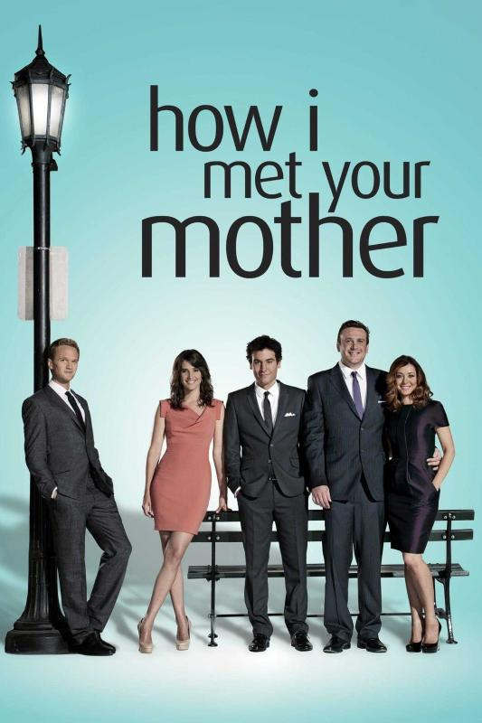

Diziler
Mr. Robot

Tür: Drama Tekno gerilim Psikolojik gerilim
Yönetmen: Sam Esmail
Konusu: Mr. Robot, sosyal anksiyetesi ve depresyonuyla mücadele eden, asosyal bir siber güvenlik uzmanı olan Elliot Alderson'ın hikayesini anlatır. Elliot, gündüzleri bir siber güvenlik firmasında çalışırken, geceleri ise bir etik hacker olarak faaliyet göstermektedir. Toplumu yozlaştıran büyük şirketlere, özellikle de “Evil Corp” adını verdiği çok uluslu bir firmaya karşı büyük bir öfke besler. Elliot’ın hayatı, Mr. Robot adını kullanan gizemli bir adamla tanışmasıyla değişir. Mr. Robot, Elliot’ı, büyük şirketleri yıkmayı amaçlayan bir hacker grubu olan fsociety'ye katılmaya ikna eder. Grup, küresel ekonomiyi çökertmeyi ve insanların borçlarını silmeyi planlamaktadır. Elliot, sistemin bozukluğuna inanır ama zamanla kime güvenebileceğini, gerçek ile hayali nasıl ayırt edeceğini sorgulamaya başlar. Dizi ilerledikçe Elliot’ın zihinsel durumu, geçmişi ve gerçek kimliğiyle ilgili sırlar açığa çıkar. Sürükleyici anlatımı, psikolojik derinliği ve teknoloji/sistem eleştirisiyle dizi, sadece bir hacker hikayesi değil; aynı zamanda kimlik, ahlak ve özgürlük üzerine güçlü bir sorgulama sunar
Dizinin Detayına GitPeaky Blinders

Tür: Suç draması Tarihî dönem draması Psikolojik gerilim
Yönetmen: Otto Bathurst
Konusu:Peaky Blinders, 1. Dünya Savaşı’ndan sonra 1920’lerin İngiltere’sinde, Birmingham şehrinde geçer. Dizi, savaş gazisi Thomas Shelby ve onun liderliğini yaptığı Shelby ailesi merkezli Peaky Blinders çetesinin yükselişini konu alır. Çete, adını kasketlerinin siperliklerine diktikleri jiletlerden alır ve şehirde yasa dışı bahis, kaçakçılık ve diğer organize suç faaliyetlerini yürütür. Thomas Shelby, hem ailesini hem de çetesini büyük bir suç imparatorluğuna dönüştürmeye kararlıdır. Ancak bu yolda birçok engelle karşılaşır: polisle, hükümetle, rakip gangsterlerle ve hatta ailesiyle bile mücadele etmek zorunda kalır. Özellikle dedektif Chester Campbell, hükümet adına Peaky Blinders'ı çökertmek için görevlendirilmiştir. Her sezon, farklı bir düşman ya da tehdit etrafında şekillenir: IRA, İtalyan mafyası, komünistler, politikacılar ve daha birçok güç. Thomas Shelby zamanla sadece bir suç lideri değil, aynı zamanda politik bir figür haline gelir ve milletvekili olur. Dizi sadece suç dünyasına değil, aynı zamanda savaş sonrası travma, sınıf ayrımı, aile bağları, ihanet, aşk ve güç mücadelesine de derinlemesine değinir. Thomas Shelby’nin zeki, stratejik ama aynı zamanda kırılgan yapısı, dizinin en dikkat çeken yönlerinden biridir.
Dizinin Detayına GitHow I Met Your Mother
Tür:Komedi Romantik
Yönetmen: Pamela Fryman (196 bölüm) Rob Greenberg (7 bölüm) Micheal Shea (4 bölüm) Neil Patrick Harris (1 bölüm)
Konusu: How I Met Your Mother, Ted Mosby’nin çocuklarına anneleriyle nasıl tanıştığını anlattığı bir hikâyedir. Hikâye, 2005 yılında başlar ve Ted’in aşkı ararken yaşadığı ilişkiler, arkadaşlarıyla olan maceraları ve hayatındaki dönüm noktaları etrafında döner. Ted’in en yakın arkadaşları Marshall, Lily, Barney ve Robin’dir. Dizi boyunca bu beşli New York'ta hayatı keşfeder, kariyerlerine, aşklarına ve dostluklarına dair komik ve duygusal anlar yaşar. Her bölümde 2030’daki Ted, geçmişi anlatırken bazen olaylara esprili yorumlar yapar. Dizi, romantik komedi türünde olsa da, içinde dostluk, büyüme ve kayıplara dair güçlü temalar barındırır. Final sezonunda Ted’in gerçek aşkı olan "Anne" karakteriyle nasıl tanıştığını sonunda öğreniriz.
Dizinin Detayına Gitİçerde

Tür:Polisiye, Aksiyon, Dram
Yönetmen: Uluç Bayraktar
Konusu: İçerde, polis akademisinden mezun olan Sarp Yılmaz ve yıllar önce ailesinden koparılan Mert Karadağ’ın kesişen hikâyesini anlatır. Sarp, mafya lideri Celal Baba’nın içine sızmak için gizli görevle onun yanına girer. Ancak bilmediği şey, Celal’in sağ kolu olan Mert’in aslında yıllar önce kaçırılan öz kardeşi olduğudur. Sarp adalet için mücadele ederken, Mert geçmişini hatırlamamaktadır ve Celal’e sadıktır. İki kardeş birbirlerinin kim olduğunu bilmeden aynı düşmana karşı farklı şekillerde savaşır. Dizi boyunca ihanet, aile bağları, intikam ve gerilim ön plandadır.
Dizinin Detayına Git